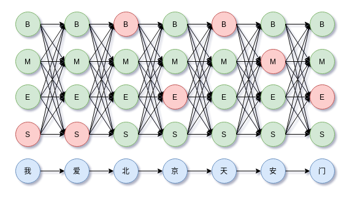
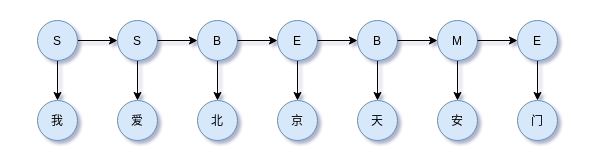
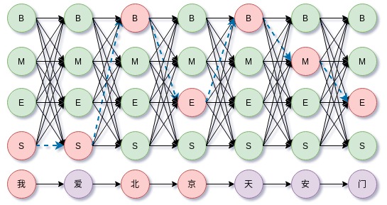
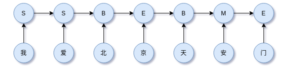
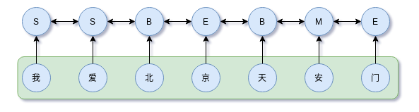
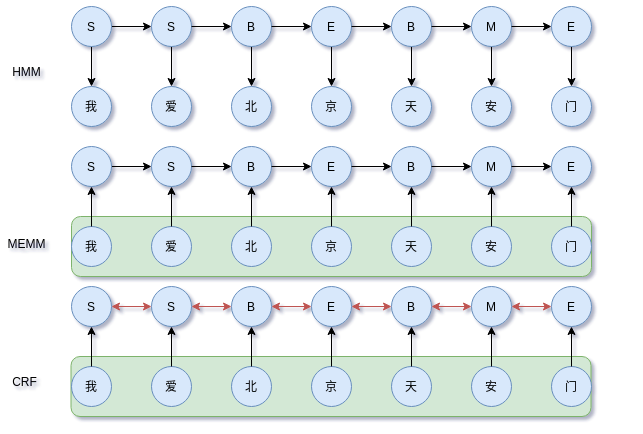

序列标注：从HMM、MEMM到CRF
本文从序列标注的角度讲述三个经典的模型：HMM、MEMM（最大熵马尔可夫模型）和CRF，这三个模型都用于解决序列标注问题，其中CRF结合当前的深度学习模型在信息抽取和序列标注任务上已经取得巨大的成功。本文把最大熵模型、HMM、MEMM、CRF串起来讲一讲。
HMM、MEMM（最大熵马尔可夫模型）和CRF在过去的文章中讲述过：
- 概率图模型系列（2）：最大熵原理和最大熵模型
- 概率图模型系列（3）：HMM
- 概率图模型系列（4）：MEMM
- 概率图模型系列（5）：CRF
- 序列标注之NER、CWS经典模型HMM实现
- 中文分词详解：从词典匹配到深度学习方法
- CRF的简洁实现
其实在过去的很多文章中都提及过图模型和序列标注任务，不过都没有综合对比且写得比较分散，今天打算串起来从序列标注（具体任务为中文分词）的角度统一梳理一下这三个经典的概率图模型。
序列标注
序列标注要完成的事情是为观察序列中的每个观察状态标上一个状态。例如中文分词，短句：我爱北京天安门，从中文分词任务来看，正确的标注为SSBEBME。有了这个标注序列，我爱北京天安门就可以完成分词，即我/爱/北京/天安门。
这里的{B,M,E,S}的意义如下列表，
| BEMS | 解释 |
|---|---|
| B | Begin，表示词开始 |
| M | Middle(Intermediate)，表示词中间 |
| E | End，表示词结尾 |
| S | Single，表示词为单个字符 |
序列标注常见的任务包括：命名实体识别（NER）、词性标注（POS）、中文分词（CWS）。下面的讲述均使用中文分词作为例子，状态集为{B,M,E,S}。
以BMES标注集为例的序列标注和解码，

用数学表示，
MEMM、CRF都是对上式引入一定假设后的优化，而HMM则直接对联合分布建模，
然后都可以利用某种打分函数的指数形式（最大熵原理）来表示该分布。
最大熵模型（MEM）
因此有带约束优化问题，
通过拉格朗日函数容易解得，
因此，如果一个模型具有这种形式，我们就认为其是最大熵相关的模型。
HMM
由于HMM有两个假设：
- 隐状态的状态转移受到马尔科可假设约束
- 观察状态只由当前时刻的隐状态决定，即观察独立性假设
观察独立性假设，即某个时刻的观察状态只取决于该时刻的隐状态（即标注），换成序列标注的语境来说就是，“天安门”的“天”字，由其对应的隐状态“B”决定。
马尔科可假设，换成序列标注的语境来说就是，当前的BMES取值只有上一个时刻的标注决定。换句话说，该过程的当前值就包含了对其未来做预测所需的全部信息。比如对标签B之后取什么标签，和B之前的标签没有关系，完全由当前的B标签决定。
BMES分词示意图，

根据马尔科可假设，标注的状态转移约束，
根据观察独立性假设，观察状态值取决与当前时刻的隐状态，
因此，HMM只考虑两点：
- 隐状态的状态转移约束
- 观察状态只由当前时刻的隐状态决定
当然，对于很多NLP任务来说，这两点约束缺失很多重要的信息，例如中文分词来说，这样的约束对于现实场景内说是不够的，但是也极大地化简建模的复杂性。基于这两点，HMM的联合概率分布为，
其中$P(y_1|y_{0}) = P(y_1)$为初始状态分布，$P(x_i|y_i)$称为发射概率，所有可能组成观察矩阵，$P(y_i|y_{i-1})$称为转移概率，所有的可能组成状态转移矩阵。于是有，
这里$x = (x_1, x_2, \dots, x_n),y=(y_1, y_2, \dots, y_n)$。于是，最优解码不光是$P(x_i|y_i)$的最大值，还要考虑$P(y_i|y_{i-1})$。
其中，$P(y_i|y_{i-1})$表示相邻两个标签间的转移概率，比如，
表示时间步$t-1$标签为$M$转移到时间步$t$标签为$B$的概率，当然正确的标注下这样的标签转移是不存在的。这里还需要注意一个边界条件，就是$P(y_1|y_{0})$表示初始状态分布。
而，$P(x_i|y_i)$表示标签概率分布，对于给定的时间步$i$，$x$的取值是固定的，比如观察变量“北”，但是其对应的标签是有不同的概率，一般HMM、CRF、CNN、RNN或者Dense+softmax网络都可以计算。比如“北”字，
类似地，“京”字，
综合上述，那么沿着所有时间步前进，上式就构成篱笆（Lattice）网络的有向无环图（DAG）。如下图所示，

于是求解$\hat{y} = \arg \max_{y} P(y|x)$就成了篱笆（Lattice）网络上的最大概率路径或最短路问题。它的计算复杂度是$O(T\cdot N^2)$，$T$是时间步数，$N$是状态数量。
上图路径长度为7，每个时间步有4种可选择的状态，因此路径总共有$4^7$种。对于更一般的情况，路径长度为$l$，每个时间步状态数量为$n$，那么所有路径组合有$n^l$种。直接枚举所有路径搜索是不可能的。
最短路中有一个简单朴素的特性：如果$(i_1, \dots, i_j, \dots, i_n)$是所有路径中的最短路，那么任意$i_j$切分出的两段分路径$(i_1, \dots, i_j)$和$(i_j, \dots, i_n)$都是这两段路径的端点所构成的所有可能路径中最优的，否则如果还有更优的分路径，就会有比原来更短的路径，这与一开始的最优路径假设相悖。这个特性用来排除在前行搜索最优路径时把不符合以上特性的分路径过滤掉。
这就是维特比算法的核心思想，过滤掉不符合最短路思想的路径。
状态转移矩阵参数估计，$a_{ij} = P(i_{t+1} = q_{j}|i_{t}=q_{i})$
其中$i,j$取值均在$[1, N]$范围内。
观察矩阵的参数估计，
其中$j \in [1, N], k \in [1, M]$，通常在实现的时候使用稀疏形式，如字典来存储参数。
MEMM
在序列标注问题中，如中文分词，隐状态（即标注）不仅和前一时刻的隐状态有关，还和下一时刻的隐状态、当前观察状态以及当前观察状态的上下文相关。如中文分词中，一个字应该标注成{B,M,E,S}中的哪一个标注，不仅和其前一个字的标注有关，还依赖上下文中的其他字。
为解决上述问题，MEMM去掉HMM中的观察独立性假设，把整个观察序列（中文句子）纳入考虑，即，

其中$y(y_1|y_0, \boldsymbol{x})=p(y_1|\boldsymbol{x})$。注意到$P(y_{i}|y_{i-1},\boldsymbol{x})$，MEMM在考虑标签$y_i$与$y_{y-1}$的约束外，还考虑整个上下文$\boldsymbol{x}$。对于$P(y_{i}|y_{i-1},\boldsymbol{x})$，根据最大熵原理，可以写成指数的形式，于是有，
这里$g(y_{k-1},y_k)$表示相邻标签约束的分值，所有可能的组合构成一个$m\times m$的状态矩阵，$m$为状态数量。$f(y_k;\boldsymbol{x})$表示上下文$\boldsymbol{x}$下输出为$y_k$的分值。分母需要枚举所有可能的状态转移，一边满足归一化特性。
直观来看，MEMM就是对每个时间步单独归一化，于是在整个序列上，MEMM可以表示为（这里把边界也纳入到一般式内），
这里$g(y_0, y_1) = 0$，以保证边界一致。可以看到，MEMM是每个时间步对状态进行归一化。这种归一化称为称为局部归一化，因为它不是面向全序列，这也给MEMM带来一定的问题。
从模型上看，尽管MEMM考虑整个观察序列，但是存在标注偏置（label-bias）问题。导致这个问题的原因是局部归一化，隐状态（标注）倾向于转移到后续转移状态更少的状态上，以此提高整体的后验概率。
以上的介绍是比较偷懒的，更详细的分析见概率图模型系列（4）：MEMM。
CRF
CRF是判别模型，直接对$P(y_{1}, y_{2}, \dots ,y_{n} |\boldsymbol{x})$建模，

注意上图箭头并不是概率图中的变量关系，CRF是马尔科夫网络，而是说明它们的约束。
为解决MEMM局部归一化导致的问题，CRF进行全局归一化，即，
这里的关键是$Z(y_{1 \cdots n})$归一化因子在全局范围上进行归一化，递归地枚举整个隐状态序列。不过这个计算涉及到递归处理，实现上是一个递归计算的RNN，因此训练比MEMM慢和HMM都慢。
解码
HMM、MEMM、CRF均可以使用viterbi解码。
以“我爱北京天安门”的分词为例，用过去在HMM文章中的图片表示，
viterbi算法做的事情就是在以上Lattice风格的DAG中搜索最优路径。
三者对比
HMM是有向图生成模型，模型本身引入两个限制较大的假设：（1）齐次马尔可夫性假设（2）观察独立性假设。这两个假设换成中文分词语境来说就是，在隐状态集为{B,M,E,S}下，当前标注的取值取决于前一时间步的标注，而当前时刻的观察值（中文字）只由当前时间步的标注决定。显然，这样的约束导致模型忽视上下文特征，进而表达能力不够。
MEMM有向图判别模型，去掉HMM的观察独立性假设，把整个观察序列纳入考虑，因此比HMM有更强的表达能力。但是，MEMM局部归一化导致标注偏置，即状态更倾向转向具有较少状态转移的状态。

CRF是无向图判别模型，使用全局归一化解决MEMM的标注偏置问题。但是全局归一化涉及递归计算，导致模型复杂且参数训练过程慢。
根据以上的分析思路，这下就可以理解为什么CRF往往比HMM、MEMM效果更好，因为这个原因，在深度学习时代更多的是使用Encoder+CRF的形式来解决标注问题。
总结
本文讲述了三个经典的模型：HMM、MEMM（最大熵马尔可夫模型）和CRF。从HMM开始讲述，考虑到其观察状态独立性假设，带来的单一语义表达问题，引入MEMM在建模时考虑整个观察序列，然而局部归一化导致MEMM存在标注偏置问题。CRF则直接在全局范围上进行归一化，获得最好的性能。
到了深度学习时代，HMM、MEMM似乎已经很少被提及，在序列标注、信息抽取任务中，只剩下CRF发光发热。不知道随着技术的发展，CRF是否能继续香下去~
转载请包括本文地址：https://allenwind.github.io/blog/13551
更多文章请参考：https://allenwind.github.io/blog/archives/